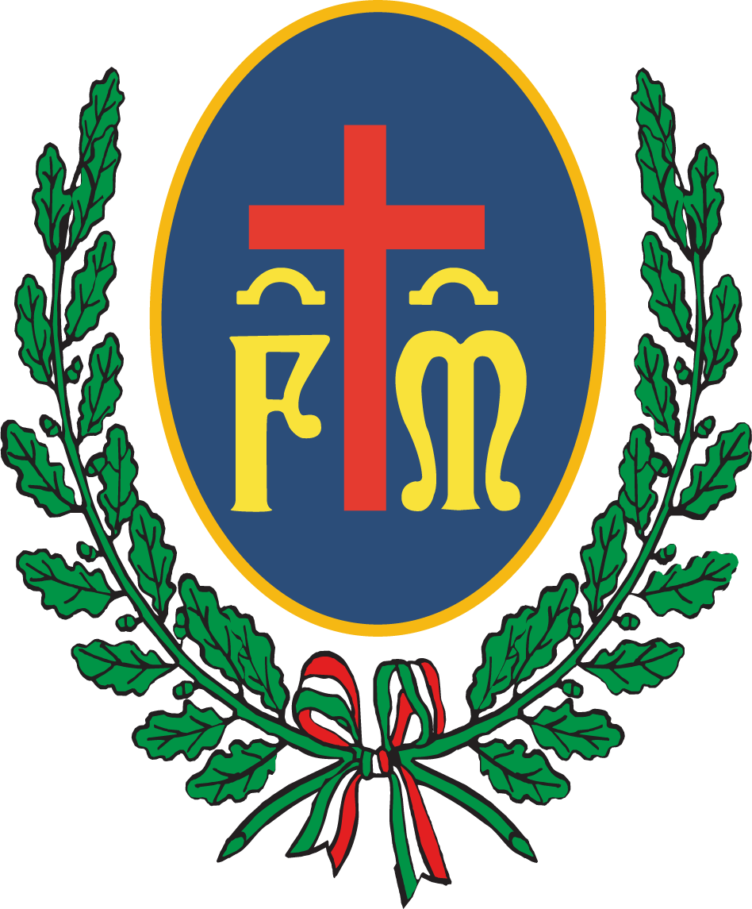

ASSEMBLEA DEI SOCI
CONFRATERNITA DI MISERICORDIA
DI ARICCIA ODV
[GIORNO]
[GG MESE]
ORE
[00:00]
[LUOGO E INDIRIZZO]
[PRIMA O SECONDA CONVOCAZIONE]
Tutti i dettagli nel post e su misericordia-ariccia.it